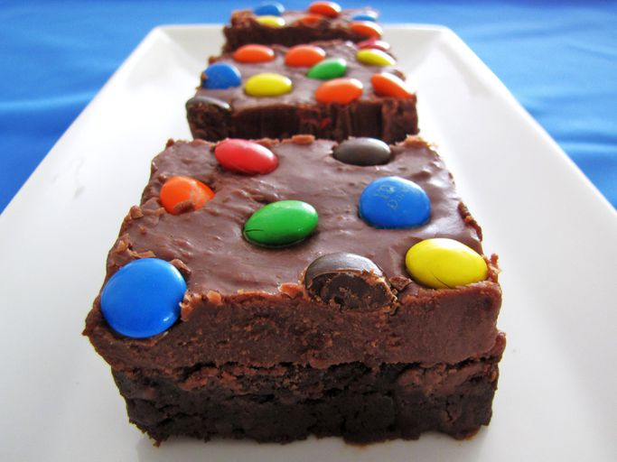

Brownie Recipe

This chocolate frosting for brownies comes from my mom. You can use this recipe on made-from-scratch brownies or spread it over boxed brownies for a special touch. It's very rich and very good!
Ingredients
- 1 ½ cups white sugar
- 6 tablespoons milk
- 6 tablespoons unsalted butter, softened
- 1 cup chocolate chips
- 1 dash vanilla extract
Stages
- Stir together sugar, milk, and butter in a saucepan over medium heat; bring to a boil. Cook at a rolling boil for 30 seconds, then immediately remove from the heat.
- Add chocolate chips and vanilla to the saucepan; stir until chips are completely melted. Pour immediately over warm brownies.